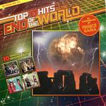
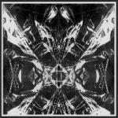
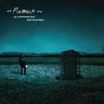
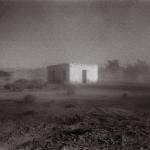

Music Reviews
-

Prince Rama Top 10 Hits of the End of the World
On Top 10 Hits of the End of the World, Prince Rama constructs what might be one of the most ridiculous and ambitious concepts for a pop album in recent memory. But does the music do a well enough job of backing up their outlandish ideas?
Peter Quinton remains secluded in his bunker while review Prince Rama's apocalyptic opus -

Green Day Dos!
Green Day has embarked on probably their most ambitious effort to date: a series of three albums, all released within one year. This begs the question as to whether or not Green Day can balance their ambition with a consistent level of quality. Does Dos!, the second release in this series, stand up on its own?
Andrew Ciraulo reviews........ -

Clinic Free Reign
Clinic returns with an experimental follow-up to 2010's Bubblegum. It's short but manages to feel long. It's interesting but manages to feel dull.
Andrew Baer reviews... -
Black Moth Super Rainbow Cobra Juicy
Though it occasionally lacks the off-the-wall, spontaneous feeling that came with earlier releases, Black Moth Super Rainbow’s latest shows distinct signs of warmth and maturity, yet glows with a radioactive kind of ooze which suggests that their unique brand of hijinks is not in short supply.
Peter Quinton straps on his latex mask and grabs his skateboard for his grooviest review yet... -

Dan Friel Valedictorian/Exoskeleton EP
Dan Friel, formerly of Parts & Labor, releases his debut EP on Thrill Jockey with a full-length release coming in February as well. With a substantial noise/rock/experimental repetoire behind him, what does the release through a new label signify at this stage of his career?
Matt Bevington reviews... -

Punks on Mars Bad Expectations
The revisionist-leaning NYC band fronted by Ryan Howe blazes a hyperactive collage of power pop songs controlled by a channel surfer flipping through dozens of music-influenced images at lightning speed.
Juan Edgardo Rodríguez takes a trip... -

Pinback Information Retrieved
Now on their fifth album and showing no signs of progression, Pinback are a strong and unique band who provide a few excellent songs, but may leave you wishing for some curveballs...
But there's one track Stephen Wragg can't stop listening to... -
The Secret Agnus Dei
To call this noise would be an insult to jackhammers.
Alan Shulman reviews -
METZ METZ
WARNING: Remove all valuables from the room before playing this record and wear a helmet.
Matt Bevington tells you why... -

Godspeed You! Black Emporer Allelujah! Don't Bend! Ascend
The mighty GY!BE returns and leaves a trail of dead in their wake.
Alan Shulman reviews